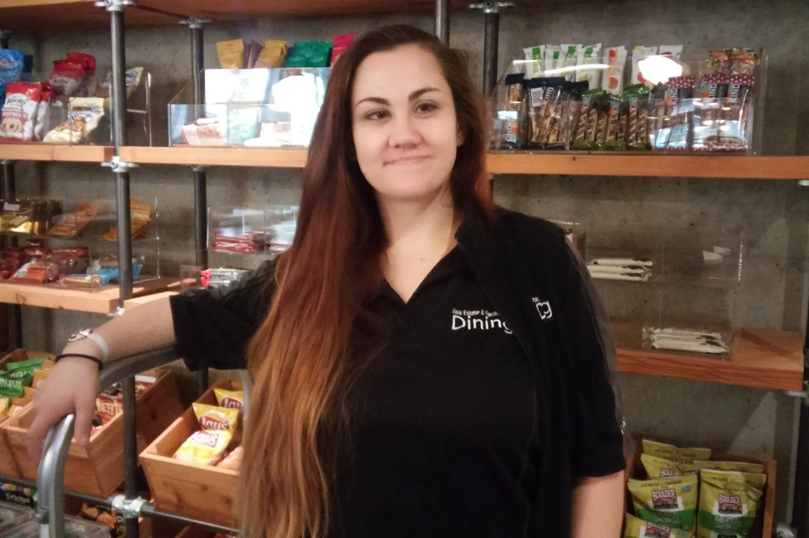
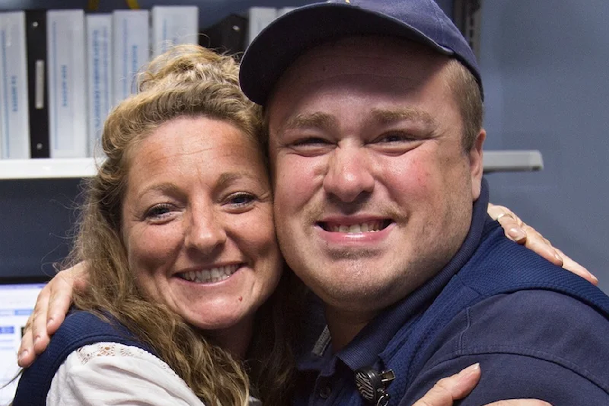
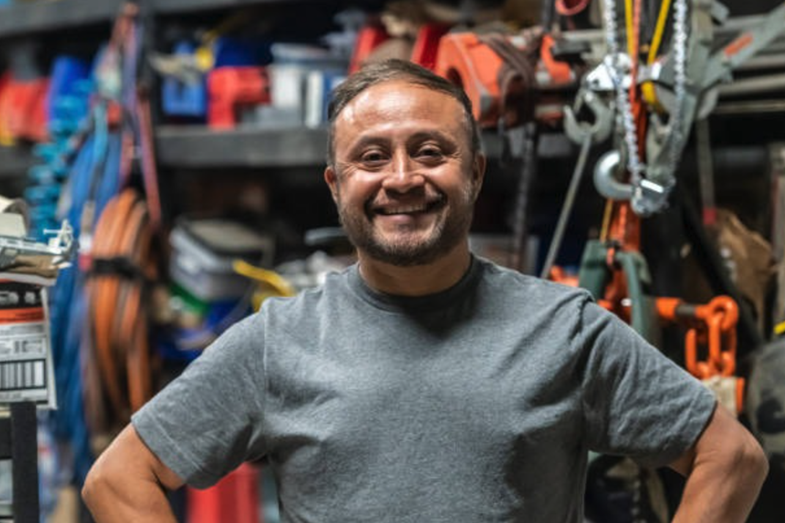

Client success stories
We develop relationships with clients and provide personalized care based on their unique needs. Our relationships empower the success of our clients


Gina
Over the years, life changed for Gina, her mobility needs shifted, and her managers adjusted and made room for her, exactly as she is. Every year, with the support of her Cares coach, Gina advocates for a raise. And every year, her hard work and happy heart earns her one.
Employment for the disabled isn't charity. It's dignity, community, and a relationship that leaves its mark on all who participate.

Danielle
After surviving multiple car accidents that left her with ongoing brain injuries while caring for a newborn, Danielle faced many challenges. With determination and the support of Cares, she found her footing.
Today, she plays an essential role in maintaining the café spaces and dreams of working in the kitchen, creating meals that bring people joy. She sees her current job as a step toward that vision, "Cares has helped me put my life together and understand that my disability is a condition that can be managed."

Tomas
Thanks to Cares, I got the support I needed—from gas cards to resume help—and now I'm working as a construction apprentice with a future I'm proud of.

Fernando
Coming from an immigrant background, Fernando had never discussed mental health challenges before and was experiencing anxiety that was affecting his participation. On top of that, he faced food insecurity, which added another layer of stress.
Through one-on-one support he was able to connect with culturally relevant mental health resources providing him with a safe space. They were able to provide assistance with food so he could focus on his studies and program participation without worrying about his next meal.
Fernando has shown remarkable perseverance and is set to graduate this month, ready to enter the workforce with his construction skills.